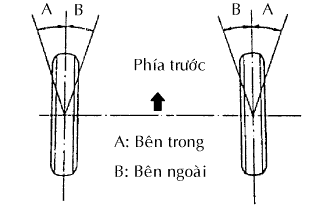

GÓC ĐẶT BÁNH TRƯỚC > ĐIỀU CHỈNH |
| 1. KIỂM TRA LỐP |
| 2. KIỂM TRA CHIỀU CAO XE |
Hãy nhún xe vài lần để ổn định hệ thống treo và sau đó đo chiều cao xe.
| Kiểu xe | Phía trước A - B | Phía sau C - D | |
| TGN40L-GKMRKU | 75 mm (2.95 in.) | 43 mm (1.69 in.) | |
| TGN40L-GKMNKU | 75 mm (2.95 in.) | 44 mm (1.73 in.) | |
| 3. KIỂM TRA ĐỘ CHỤM |
| Kiểu xe | A + B C - D |
| TGN40L-GKMRKU | A + B: 0°06' +-5' (0.10° +-0.09°) C - D: 2.1 +-1.0 mm (0.08 +-0.04 in.) |
| TGN40L-GKMNKU | A + B: 0°06' +-5' (0.10° +-0.09°) C - D: 2.1 +-1.0 mm (0.08 +-0.04 in.) |
| 4. ĐIỀU CHỈNH ĐỘ CHỤM |
Tháo các kẹp bắt cao su chắn bụi thanh răng.
Nới lỏng các đai ốc hãm đầu thanh nối.
Vặn các đầu thanh răng bên phải và bên trái một lượng bằng nhau để điều chỉnh độ chụm đến giá trị giữa.
Chắc chắn rằng độ dài của các đầu thanh răng bên phải và bên trái là xấp xỉ như nhau.
Xiết chặt các đai ốc hãm đầu thanh nối.
Hãy đặt các cao su chắn bụi lên các đế và lắp các kẹp.
| 5. KIỂM TRA GÓC BÁNH XE |
|  |
Quay vô lăng hoàn toàn sang trái và phải và đo góc quay.
| Góc trong bánh xe | Góc bánh xe bên ngoài (tham khảo) |
| 39°48' (37°48' đến 40°48') 39.8° (37.8° đến 40.8°) | 33°30' (33.5°) |
| 6. KIỂM TRA CAMBER, CASTER VÀ GÓC KINGPIN |
Lắp đồng hồ đo góc camber-caster-kingpin hoặc để các bánh trước của xe lên tâm của bộ điều chỉnh góc đặt bánh xe.
Kiểm tra camber, caster và góc Kingpin.
| Kiểu xe | Góc Camber |
| TGN40L-GKMRKU Sai lệch Phải-Trái | 0°15' +-30' (0.25° +-0.50°) 30' (0.50°) trở xuống |
| TGN40L-GKMNKU Sai lệch Phải-Trái | 0°14' +-30' (0.23° +-0.50°) 30' (0.50°) trở xuống |
| Kiểu xe | Góc Caster |
| TGN40L-GKMRKU Sai lệch Phải-Trái | 3°21' +-30' (3.35° +-0.50°) 30' (0.50°) trở xuống |
| TGN40L-GKMNKU Sai lệch Phải-Trái | 3°24' +-30' (3.40° +-0.50°) 30' (0.50°) trở xuống |
| Kiểu xe | Góc King pin |
| TGN40L-GKMRKU Sai lệch Phải-Trái | 10°39' +-30' (10.65° +-0.50°) 30' (0.50°) trở xuống |
| TGN40L-GKMNKU Sai lệch Phải-Trái | 10°40' +-30' (10.67° +-0.50°) 30' (0.50°) trở xuống |
| 7. ĐIỀU CHỈNH GÓC CAMBER VÀ CASTER |
Nới lỏng đai ốc cam điều chỉnh Camber và bu lông cam điều chỉnh Camber.
Hãy vặn cam điều chỉnh Camber No.1 và cam điều chỉnh Camber theo cả 2 hướng, và điều chỉnh các góc Camber và Caster đến giá trị giữa.
Cách đọc bảng điều chỉnh (dùng một vi dụ)
Đo góc đặt bánh xe hiện tại.
| Camber | Caster |
| 0°20' (0.30°) | 3°20' (3.30°) |
Đánh dấu khác nhau giữa giá trị tiêu chuẩn (A) và giá trị đo được (B) trên bảng điều chỉnh.
Như được chỉ ra trên đồ thị, hãy đọc khoảng cách từ điểm được đánh dấu 0 và điều chỉnh các cam điều chỉnh phía trước và/hoặc phía sau tương ứng.